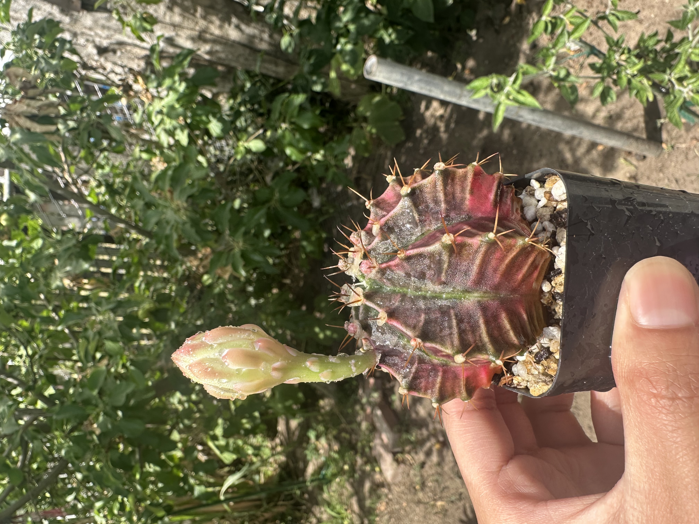

Cacti.
One of my hobbies is growing succulents. I have over 200 different species. My favorites, however, are Gymnocalyciums, Astrophytums, Hylocereeae, and Aloeveras. Although they are each succulent, they are completely different. Let's look at gymnos, for instance. Unlike most Hylocereeae, they cannot self-pollinate. That is, in order for a gymno cactus to bear fruit, it must be cross-pollinated with a different gymno. It is not sufficient to pollinate it with a species different from gymno, such as an Astrophytum. Let's take a closer look. Note that the below illestrations are not the same plant, but rather a representation of the species. I am not trying to show off my pants (okay a little bit), but rather to show the diversity of the species.
This is a Gymnocalycium, currently in the early stages of blooming. The green stem that's emerging is actually its flower. Unlike many cactus flowers, this one is hairless. These flowers typically take about 2 to 4 weeks to fully bloom. Once they open, they usually stay in bloom for 5 to 7 days.  This Gymnocalycium is in the late stage of blooming and should open fully either later today or by tomorrow. The more sunlight it receives, the faster the flower will bloom.
Here, the Gymnocalycium is blooming with two flowers. Inside each flower are the stamens, made up of filaments and anthers. The anthers are where the pollen is produced. However, to successfully pollinate these flowers, you need pollen from a different plant. Pollen from the same flower or even another flower on the same plant usually won’t work. Most Gymnocalyciums aren’t self-fertile. To pollinate, you take pollen from the flower of another Gymnocalycium and place it on the stigma. The stigma is the part at the tip of the style that sticks out from the center of the flower and receives the pollen.
If pollination is successful, then after the flower dies, the base of the flower develops into a seed pod. It takes a few weeks to fully ripen, though the exact time depends on the species. Some growers leave the seed pods on the plant for several months to maximize seed development. Especially if they plan to use the seeds for cactus propagation. Seed germination can take years, especially depending on your climate. For example, I have seedlings from 2019 that are still no bigger than a quarter. All cactus seed pods are technically edible, though some taste better than others. For example, like those from certain Opuntia species or dragon fruit (Hylocereus). The Gymnocalycium in the picture is variegated. The orange coloration is a genetic mutation and is quite rare for this species. Growing seeds from this plant will likely result in more variegated cacti.
More Photos!
Gymnocalyciums (Different Variety.)
Gymnocalyciums usually start developing flower stems in mid to late spring, with blooming typically occurring in mid to late summer. These particular Gymnos include variegated Gymnocalycium LB 2178, Gymnocalycium mihanovichii, and a few other varieties.
Cephalocereus senilis
We call this the Old Man Cactus and yes, it really does have hair! It's typically found in the mountains of Mexico, where the hair helps protect it from the intense sun and cold winter temperatures. Since it grows at high altitudes, this hairy covering is essential for its survival. The Old Man Cactus grows very slowly but can live anywhere from 50 to 200 years. Over time, it can reach impressive heights, growing up to 16 to 60 feet tall!
Astrophytum Asterias
These are commonly known by the nickname 'Astros.' They’re some of the most unique plants I’ve come across. Each seedling from the same mother plant grows differently, making every one truly individual. The small white specks on their surface vary from plant to plant and resemble stars. Hence, where the name 'Astros' comes from. The larger white circles are called areoles, and they often have fine hairs. Most Astros are spineless. Notoriously they are prone to rot and aren’t very forgiving. It’s best to underwater them rather than risk overwatering.